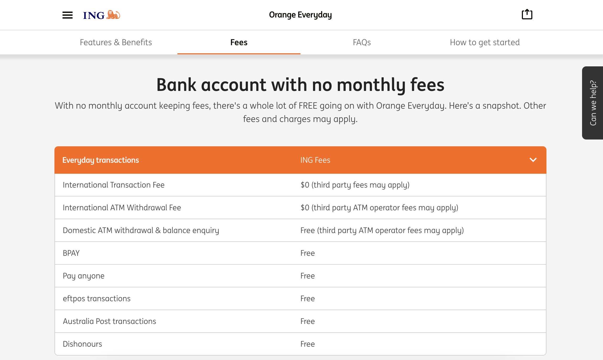
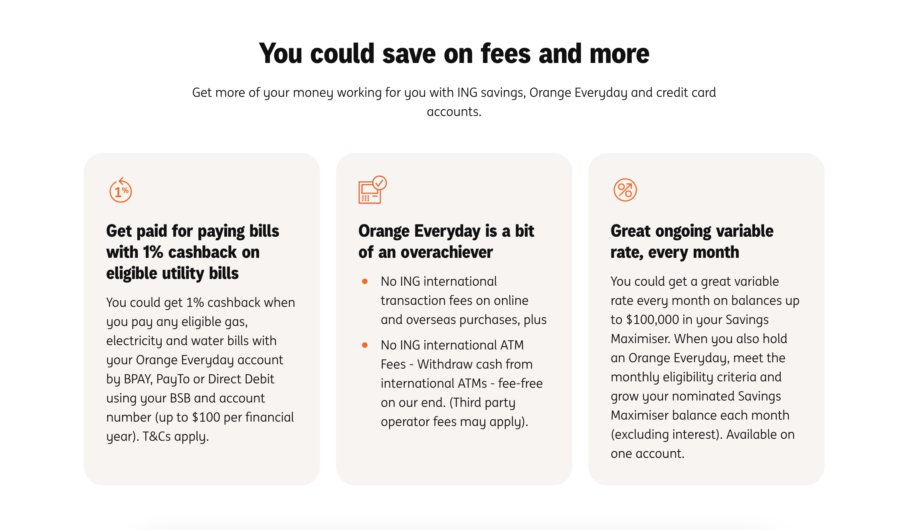
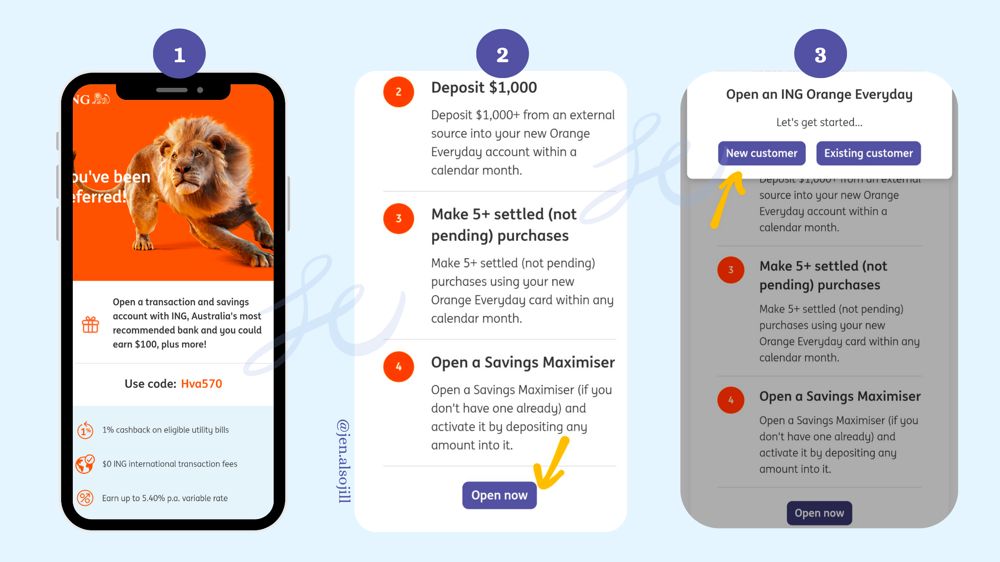
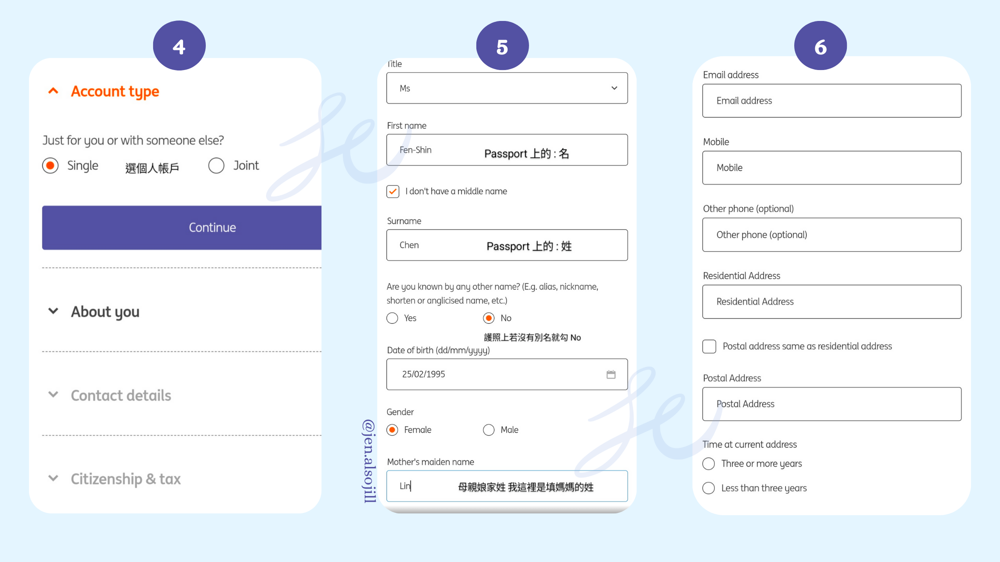
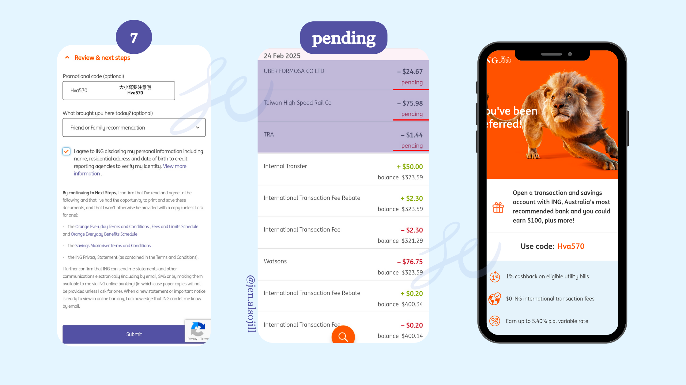

嗨，在澳洲打工／生活的大家。如果你正在找一個方便又優惠的銀行帳戶，ING 澳洲網路銀行是個很棒的選擇。用專屬連結開戶，完成幾個簡單步驟就能領到新戶開戶禮金。
點這裡開戶 →照著下面的順序做，就能順利拿到禮金。
點擊連結開戶，選擇「New customer」開始申請。在 Review & next steps 那一頁的 Promotional code 欄位，填入今今的推薦碼：
開戶時兩個帳戶都要開，這樣才符合領取禮金的資格：
通過雙證件的身分（ID）驗證。成功開戶後，在同一個日曆月內從外部帳戶轉入 $1,000 以上到你新開的 Orange Everyday 帳戶。
開戶後大約 7–14 天會收到 ING 的銀行卡。拿到卡後，在同一個日曆月內用這張卡完成 5 筆以上已入帳（settled）的消費。每筆金額不用大，1 AUD 也可以。建議到 Coles 或 Woolworths 這類超市消費，交易紀錄比較不會卡在 Pending 太久。
完成以上所有步驟後，次月就可以坐領 $100 AUD 開戶禮金。
這幾年往返澳洲台灣，ING 非常適合在異鄉生活的遊子。
台灣 9 成的 ATM 都可以直接用 ING 的卡提領台幣，對常往返兩地的人來說很方便。
不用擔心帳戶被收月費，剛到澳洲、資金還不穩定的時候特別實用。
每月完成銀行的基本任務後，可以免除國際刷卡手續費。
符合條件時，澳洲境外每月有數次提款免手續費的額度。


各項優惠的資格條件（例如每月需完成的存款與消費筆數）依 ING 規定為準，最新內容請看 ING 官方卡片說明頁。
跟著截圖一步一步操作。



本頁內容為個人使用心得與一般性教學分享，不構成任何金融建議。銀行利率、開戶禮金金額與活動條件請以 ING 官方最新公告為主。頁面中的開戶連結為推薦連結。